闲来无事，随便写写……
那些提效/创意的 vscode 插件
前言
在前端开发中，vscode 是最常用的编辑器，而 vscode 有着各种实用插件，有些可以帮助我们提升效率，有些可以让我们的工作过程变得更加快乐。
今天我们就来介绍一下这些好用的插件吧~
提效类插件
1. 代码神器 - Power Mode
首先，介绍的第一款插件是 Power Mode，它可以让你的编程过程变得更加快乐（如下图）。
2. 高亮标识 - Todo Tree
这里可以推荐一个插件来帮助提高效率，那就是 Todo Tree，我们在应用商店搜索进行安装后，我们只需要添加 // TODO: 这样的注释代码，我们就可以在 Todo Tree 中快速定位到这行注释（如下图）。
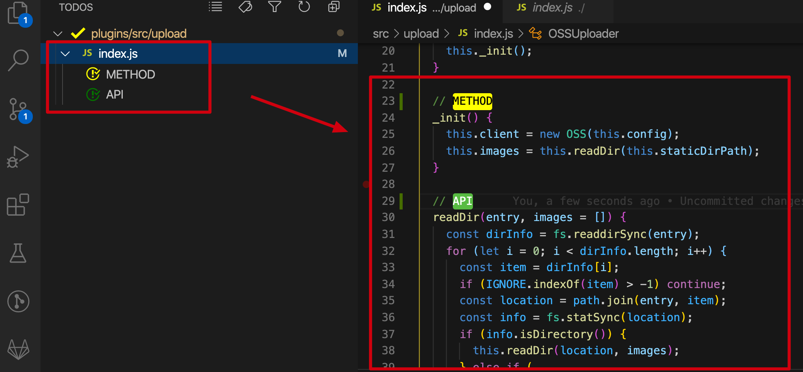
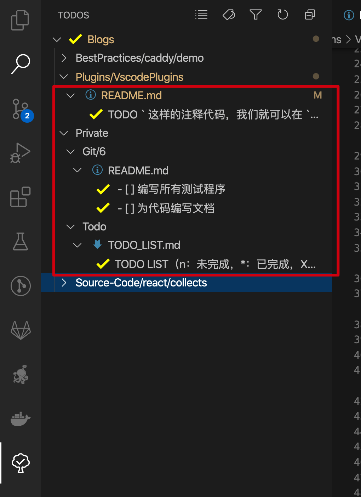
3. 快速定位括号 - Bracket Pair Colorizer
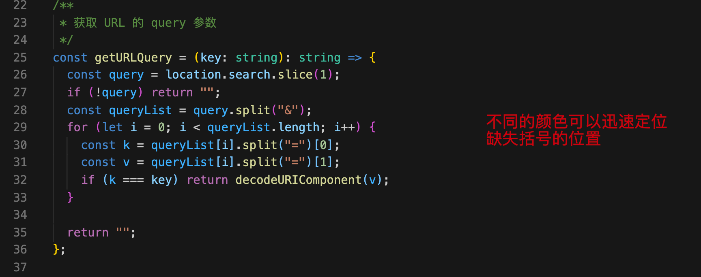
4. 拼写检查 - Code Spell Checker
我们可以使用 Code Spell Checker 插件进行拼写检测，我们安装插件后，还可以在 setting.json 中指定检测的文件，比如我这里开启了对 Vue 文件的拼写检查（如下图）。
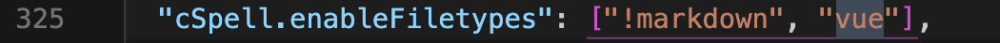
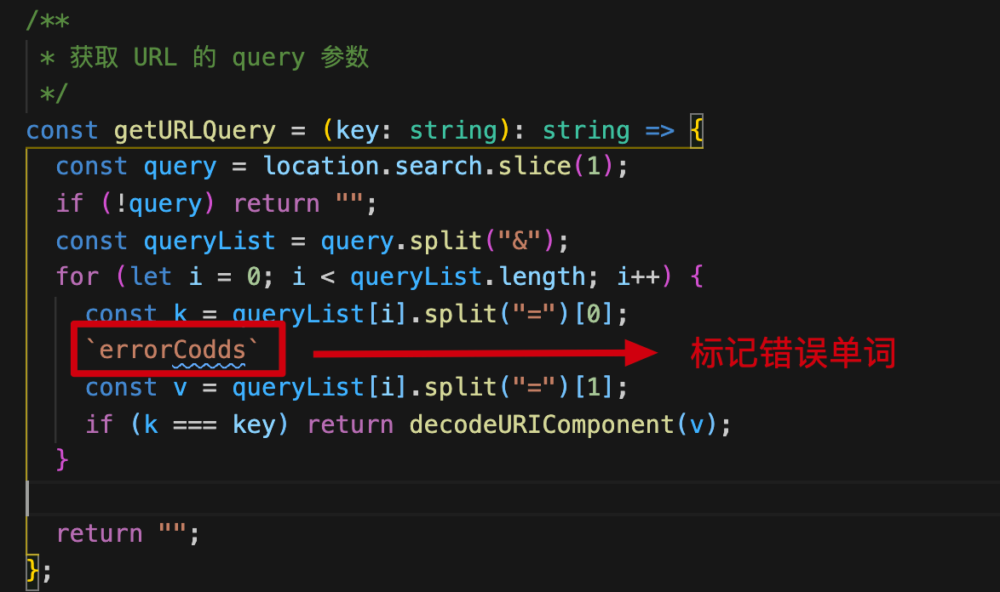
Git 管理
1.Git History
- Git History 可以帮助你迅速查看 Git 历史记录，图形化的页面，使 Git 历史一目了然（如下图）
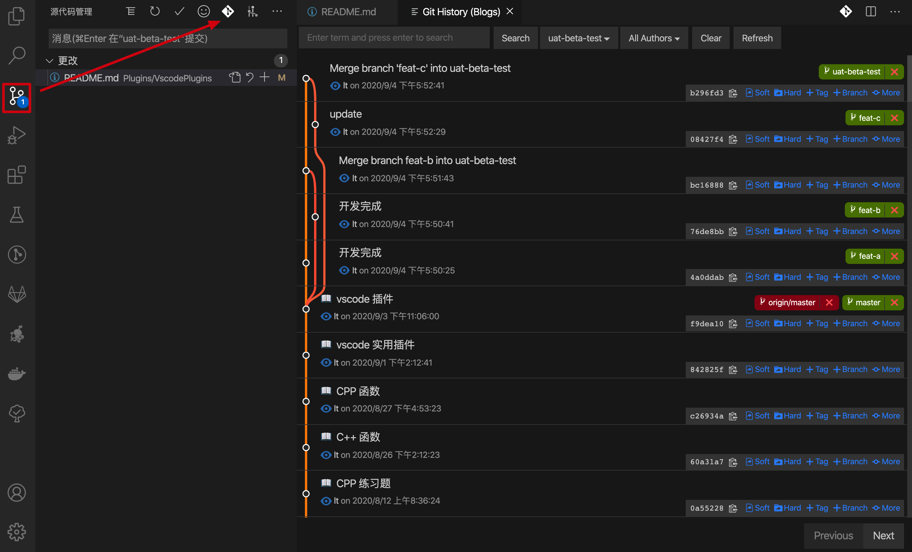 - 我们还可以查看指定文件的指定版本（如下图）
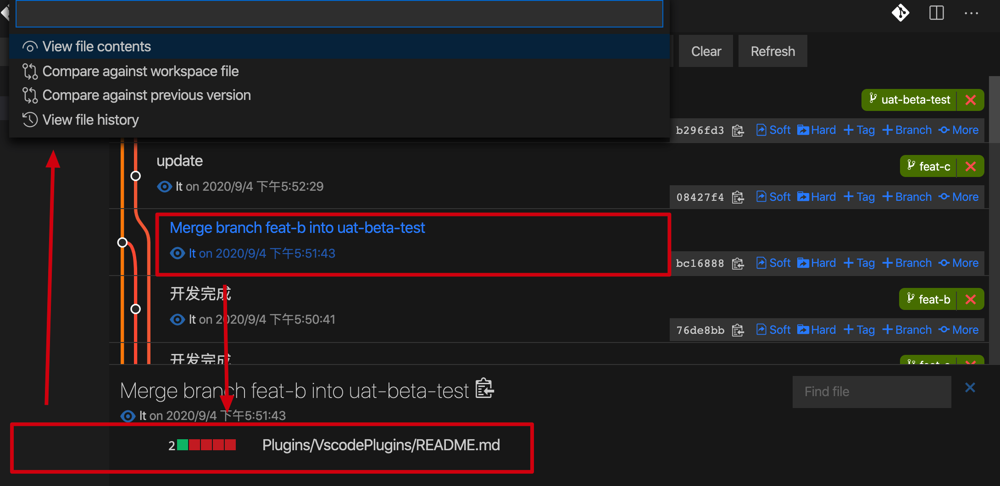 - 我们还可以将光标停留在某一行代码，查看该行代码的提交信息（提交人、提交时间、提交信息）（如下图
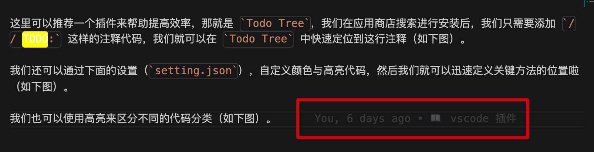
2.Git Graph
Git Graph 可以帮助你更好的分析分支之间的关系（如下图）
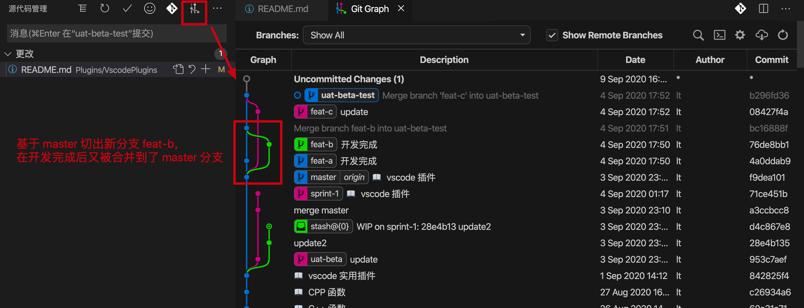
3.Git Emoji
Git Emoji 可以更好的帮助团队形成提交规范，使用一个 Emoji 表情概括本次提交，再加上一些文本描述信息，提交记录将会变得赏心悦目（如下图）。
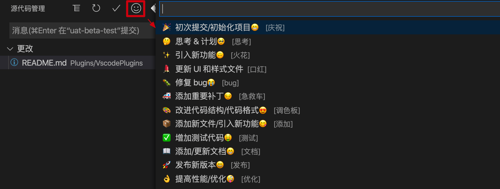
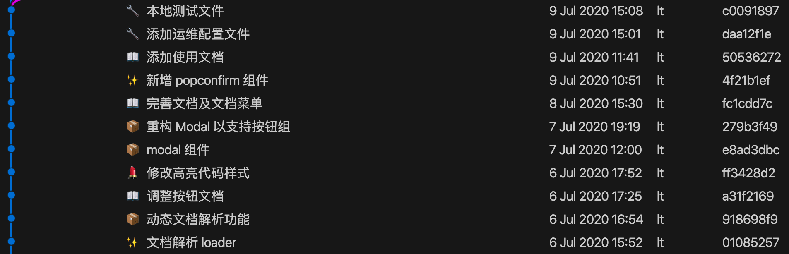
4.GitLens
GitLens 可以帮助你快速比对不同分支的代码差异（如下图）
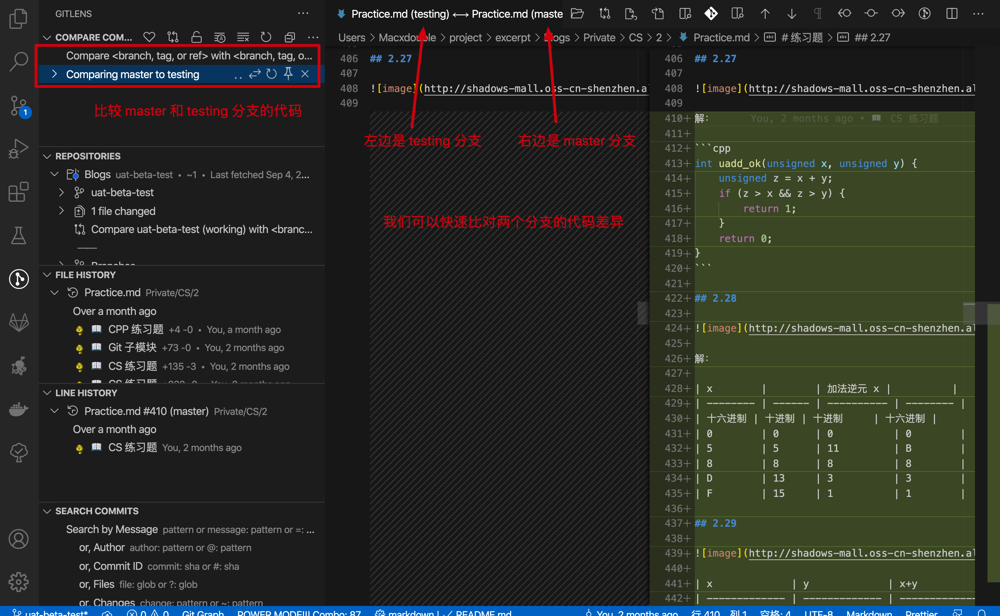
常用类
auto close tag
自动关闭标签，在开始标记的结束括号中键入后，将自动插入结束标记Auto Comment Blocks
自动插入注释行Auto Rename Tag
自动重命名配对的HTML / XML标记Auto Complete Tag
结合了自动关闭标签与同时修改同步标签Beautify
美化代码参考资料Code Runner
可以直接运行多种语言的代码片段和文件Code Spell Checker
代码拼写检查工具Drat
支持 Dart编程语言，并提供有效编辑，重构，运行和重新加载Flutter 移动应用程序和AngularDartWeb应用程序的工具。Debugger for Chrome
从VS Code调试在Google Chrome中运行的JavaScript代码。EditorConfig for VS Code
EditorConfig帮助开发人员定义和维护一致的编码风格在不同的编辑器和IDE。
EditorConfig项目包含一个文件格式定义编码风格和文本编辑器插件的集合。
EditorConfig文件易于阅读并且他们与版本控制器很好地合作。ESLint
代码检查工具filesize
实时查看当前文件的大小Flutter
Flutter移动应用程序的支持，以及对Dart编程语言的支持。JavaScript (ES6) code snippets
ES6的代码片段JavaScript Snippet Pack
JS代码片段补全language-stylus
Stylus文件添加语法高亮Open in Browser
在vscode中打开浏览器访问Path Intellisense
自动路径补全Prettier - Code formatter
格式化代码Scss
缩进Sass语法高亮TypeScript Importer
自动搜索工作空间文件中的TypeScript定义，并将所有已知符号作为完成项提供，以允许代码完成。Vetur
代码格式化
vscode快捷键
1.同时打开多个窗口（查看多个项目）
- 打开一个新窗口： Ctrl+Shift+N
- 关闭窗口： Ctrl+Shift+W
- 同时打开多个编辑器（查看多个文件）
2.新建文件 Ctrl+N
- 历史打开文件之间切换 Ctrl+Tab，Alt+Left，Alt+Right
- 切出一个新的编辑器（最多3个）Ctrl+\，也可以按住Ctrl鼠标点击Explorer里的文件名
- 左中右3个编辑器的快捷键Ctrl+1 Ctrl+2 Ctrl+3
- 3个编辑器之间循环切换 Ctrl+`
- 编辑器换位置，Ctrl+k然后按Left或Right
3.格式调整
- 代码行缩进Ctrl+[， Ctrl+]
- 折叠打开代码块 Ctrl+Shift+[， Ctrl+Shift+]
- Ctrl+C Ctrl+V如果不选中，默认复制或剪切一整行
- 代码格式化：Shift+Alt+F，或Ctrl+Shift+P后输入format code
- 修剪空格Ctrl+Shift+X
- 上下移动一行： Alt+Up 或 Alt+Down
- 向上向下复制一行： Shift+Alt+Up或Shift+Alt+Down
- 在当前行下边插入一行Ctrl+Enter
- 在当前行上方插入一行Ctrl+Shift+Enter
4.光标相关
- 移动到行首：Home
- 移动到行尾：End
- 移动到文件结尾：Ctrl+End
- 移动到文件开头：Ctrl+Home
- 移动到后半个括号 Ctrl+Shift+]
- 选中当前行Ctrl+i（双击）
- 选择从光标到行尾Shift+End
- 选择从行首到光标处Shift+Home
- 删除光标右侧的所有字Ctrl+Delete
- Shrink/expand selection： Shift+Alt+Left和Shift+Alt+Right
- Multi-Cursor：可以连续选择多处，然后一起修改，Alt+Click添加cursor或者Ctrl+Alt+Down 或 Ctrl+Alt+Up
- 同时选中所有匹配的Ctrl+Shift+L
- Ctrl+D下一个匹配的也被选中(被我自定义成删除当前行了，见下边Ctrl+Shift+K)
- 回退上一个光标操作Ctrl+U
5.重构代码
- 跳转到定义处：F12
- 定义处缩略图：只看一眼而不跳转过去Alt+F12
- 列出所有的引用：Shift+F12
- 同时修改本文件中所有匹配的：Ctrl+F12
- 重命名：比如要修改一个方法名，可以选中后按F2，输入新的名字，回车，会发现所有的文件都修改过了。
- 跳转到下一个Error或Warning：当有多个错误时可以按F8逐个跳转
- 查看diff 在explorer里选择文件右键 Set file to compare，然后需要对比的文件上右键选择Compare with’file_name_you_chose’.
6.查找替换
- 查找 Ctrl+F
- 查找替换 Ctrl+H
- 整个文件夹中查找 Ctrl+Shift+F
7.显示相关
- 全屏：F11
- zoomIn/zoomOut：Ctrl + =/Ctrl + -
- 侧边栏显/隐：Ctrl+B
- 预览markdown Ctrl+Shift+V
8.其他
- 自动保存：File -> AutoSave ，或者Ctrl+Shift+P，输入 auto
浏览器插件
- FeHelper(前端助手)
JSON自动格式化、手动格式化，支持排序、解码、下载等， - MONKNOW
新标签页 - 个性化面板
这是您梦寐以求的新标签页。支持网站网址URL分组管理，数据实时云同步，黑暗深色夜间主题模式。 - Postman Interceptor
Sends requests fired through the Postman chrome app. - 有道词典Chrome划词插件
支持Chrome浏览器的划词翻译 - 谷歌访问助手
最简单易用的谷歌访问助手,为chrome扩展用户量身打造。可以解决chrome扩展无法自动更新的问题，同时可以访问谷歌google搜索，gmail邮箱，
番外
在 vscode 里画流程图 - draw.io
安装 draw.io 后，新建一个 helloworld.drawio，就可以在 vscode 里面画流程图啦（如下图）！
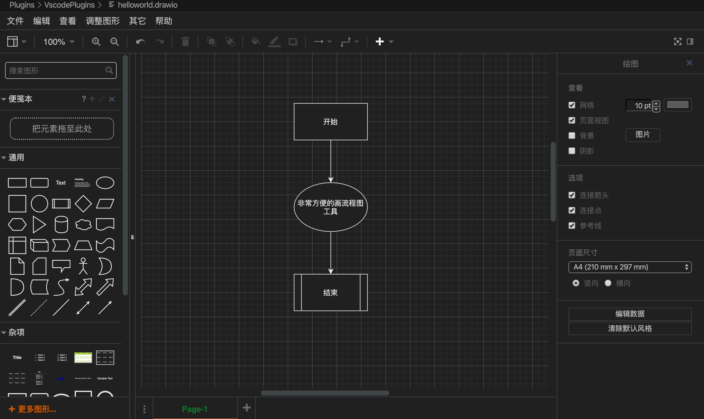
最后
持续更新中……